Libro FOA · Capítulo 10
Pruebas de fibra óptica
Inspección, potencia, pérdida de inserción, OTDR y caracterización de enlaces.
En este capítulo
Qué aprenderás
- Qué parámetros deben comprobarse
- Qué instrumentos se utilizan para las pruebas de fibra óptica
- Cómo realizar pruebas básicas de fibra óptica
- Incertidumbre de medición en las pruebas de fibra óptica
- Cómo solucionar problemas
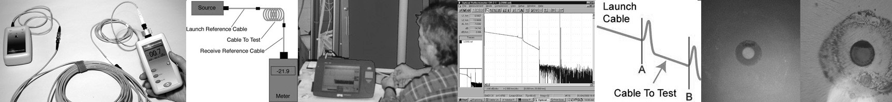
Pruebas de Fibra Óptica
Una vez instalados, empalmados y terminados todos los cables de fibra óptica, hay que probarlos. Para cada planta de cable de fibra óptica, debe comprobar la continuidad y la polaridad, la pérdida de inserción de extremo a extremo y, a continuación, solucionar cualquier problema en cada fibra de cada cable. Si se trata de un cable de planta exterior largo con empalmes intermedios, probablemente querrá verificar también los empalmes individuales con una prueba OTDR, ya que es la única forma de asegurarse de que cada empalme está bien. Si usted es el usuario de la red, también puede interesarle comprobar la potencia del transmisor y del receptor, ya que la potencia es la medida que le indica si el sistema funciona correctamente.
Las pruebas son el objeto de la mayoría de las normas del sector, ya que es necesario verificar las especificaciones de los componentes y sistemas de forma coherente. La mayoría de estas pruebas están relacionadas con las pruebas de fabricación para verificar el rendimiento de los componentes y no son relevantes para las pruebas de instalación. Tal vez la prueba más importante sea la pérdida de inserción de una planta de cable de fibra óptica instalada realizada con una fuente de luz y un medidor de potencia (LSPM) o un equipo de prueba de pérdida óptica (OLTS) que exigen todas las normas internacionales para garantizar que la planta de cable está dentro del presupuesto de pérdida antes de aceptar la instalación.
La comprobación de los componentes de fibra óptica y de las instalaciones de cableado requiere la realización de varias pruebas y mediciones, de las que a continuación se enumeran las más comunes. Algunas pruebas implican la inspección y el juicio del instalador, como la inspección visual o el rastreo, mientras que otras utilizan instrumentos sofisticados que proporcionan mediciones directas. Potencia óptica, necesaria para medir la potencia de la fuente.
La potencia del receptor y, cuando se utiliza con una fuente de prueba, la pérdida o atenuación, es el parámetro más importante y es necesario para casi todas las pruebas de fibra óptica. Las mediciones de retrodispersión realizadas por un OTDR son las siguientes mediciones más importantes, especialmente para probar instalaciones de plantas externas y solucionar problemas. Medición de parámetros geométricos de fibra y ancho de banda o dispersión son esenciales para los fabricantes de fibra, pero no son relevantes para las pruebas sobre el terreno. La resolución de problemas en cables y redes instalados es necesaria en todas las instalaciones.
La Importancia de Limpiar los Conectores
Es muy importante inspeccionar y limpiar correctamente todos los conectores de fibra óptica antes de realizar las pruebas, incluidos los conectores de todos los cables de prueba de referencia. El núcleo de una fibra óptica es bastante pequeño; tan pequeño que el polvo suspendido en el aire es a menudo tan grande como el núcleo de la fibra monomodo e incluso grande en comparación con la fibra multimodo. Una pequeña partícula de polvo en la férula de un conector puede provocar pérdidas y reflectancia significativas cuando se acoplan dos conectores o contaminar los transceptores de fibra óptica. A veces, la suciedad puede incluso dañar las fibras. Los líquidos, como los aceites de los dedos, pueden contaminar los conectores y dificultar su limpieza.
Históricamente, la limpieza de los conectores se ha realizado con alcohol isopropílico puro (99% de pureza) y toallitas sin pelusa con un método húmedo/seco. Se humedece una toallita en un punto con alcohol y se pasa el extremo de la férula del conector por el punto humedecido y luego se seca con la toallita seca. Sin embargo, hoy en día existen muchos productos de limpieza de fibra óptica que funcionan mejor y son más fáciles de usar. Existen métodos de limpieza en seco y en húmedo, líquidos de limpieza más eficaces que el alcohol y toallitas más eficaces.
Todos los técnicos de pruebas deberían tener un kit de limpieza de fibra óptica y utilizarlo para limpiar todos los conectores mediante un proceso de inspección/limpieza/inspección para asegurarse de que los conectores se limpian correctamente.
Inspección Visual
Seguimiento Visual
La comprobación de la continuidad con un trazador visual de fibra puede trazar el recorrido de una fibra de un extremo a otro a través de muchas conexiones, verificando la continuidad, las conexiones correctas y la polaridad del conector dúplex. Un trazador visual de fibra parece una linterna o un instrumento similar a un bolígrafo con una bombilla o fuente LED que se acopla a un conector de fibra óptica. Conecte la fibra que va a probar al trazador visual y mire al otro extremo de la fibra para ver la luz transmitida a través del núcleo de la fibra. Si no hay luz en el extremo más alejado, vuelva a las conexiones intermedias para encontrar la sección defectuosa del cable.
Un buen ejemplo de cómo un rastreador visual puede ahorrar tiempo y dinero es comprobar la fibra en un carrete antes de instalarlo para asegurarse de que no se ha dañado durante el transporte. En primer lugar, busque signos visibles de daños en la fibra de la bobina (como bobinas agrietadas o rotas, dobleces en el cable, etc.). Durante las pruebas, los trazadores visuales también ayudan a identificar la siguiente fibra que se va a probar para detectar pérdidas con el kit de prueba. Cuando conecte cables en paneles de conexión, utilice el trazador visual para asegurarse de que cada conexión corresponde a las dos fibras correctas! Para asegurarse de que la fibra correcta está conectada entre el transmisor y el receptor, utilice el trazador visual en lugar del transmisor y su ojo en lugar del receptor para verificar la conexión. Siga todas las normas de seguridad ocular cuando trabaje con trazadores visuales.
Localización Visual de Averías
Una versión de mayor potencia del rastreador de fibra, denominada localizador visual de fallos (VFL), utiliza un láser visible que también puede encontrar fallos. La luz láser roja es lo suficientemente potente como para comprobar la continuidad o rastrear fibras a lo largo de varios kilómetros, identificar empalmes en bandejas de empalme y mostrar roturas en fibras o conectores de alta pérdida. Podrá ver la pérdida de luz en una rotura de fibra mediante la luz roja brillante de la VFL, incluso a través de la cubierta de muchos cables símplex amarillos o naranjas (no con cubiertas negras o grises, por supuesto.) Su uso más importante es encontrar fallos en cables cortos o cerca del conector donde los OTDR no pueden encontrarlos.
También puede utilizar el VFL para verificar visualmente y optimizar empalmes mecánicos o conectores de fibra óptica de tipo empalme prepulido. Al minimizar visualmente la pérdida de luz, puede obtener el empalme de menor pérdida. Ningún otro método le asegurará un alto rendimiento con esos conectores.
Las VFL necesitan una advertencia sobre seguridad ocular. Las VFL utilizan luz visible. El nivel de potencia es alto y no se debe mirar directamente. Le resultará bastante incómodo mirar directamente a la salida de una fibra iluminada por un VFL, por lo que al trazar fibras, mire hacia el lado de la fibra para ver si se ve la luz del VFL.
Inspección Visual de Conectores Mediante Microscopio
Los microscopios de inspección de fibra óptica se utilizan para inspeccionar conectores con el fin de confirmar el pulido correcto y encontrar fallos como arañazos, defectos de pulido y suciedad.
Pueden utilizarse tanto para comprobar la calidad del procedimiento de terminación como para diagnosticar problemas. Un conector bien hecho tendrá un acabado liso, pulido y sin arañazos, y la fibra no mostrará signos de grietas, astillas o zonas en las que la fibra sobresalga del extremo de la férula o se regrese hacia adentro de esta.
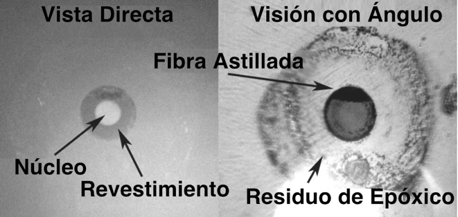
El aumento para ver los conectores puede ser de 30 a 400 de potencia, pero es mejor utilizar un aumento medio. Si el aumento es demasiado bajo, es posible que no se vean los detalles críticos. Inspeccionar con un aumento muy alto puede hacer que el observador sea demasiado crítico y rechace buenos conectores. Los conectores multimodo deben utilizar aumentos del orden de 100-200X y la fibra monomodo puede utilizar aumentos superiores, de hasta 400X. Una solución mejor es utilizar un aumento medio, pero inspeccionar el conector de tres maneras: viendo directamente en el extremo de la superficie pulida con iluminación coaxial u oblicua, viendo directamente con luz transmitida a través del núcleo y viendo en ángulo con iluminación desde el ángulo opuesto o con iluminación bastante oblicua.
La visualización directa permite ver la fibra y el orificio de la férula, determinando si el orificio de la férula tiene el tamaño adecuado, la fibra está centrada en el orificio y si se ha aplicado una cantidad adecuada de adhesivo. Sin embargo, es posible que de este modo sólo sean visibles los arañazos más grandes. Añadir la luz transmitida a través del núcleo hará visibles las grietas en el extremo de la fibra, causadas por la presión o el calor durante el proceso de pulido.
Si se observa el extremo del conector en ángulo y se ilumina desde el lado opuesto aproximadamente con el mismo ángulo, o si se utiliza una iluminación de ángulo bajo y se observa directamente, se obtendrá la mejor inspección de la calidad del pulido y de los posibles arañazos. El efecto de sombra de la visión angular o la iluminación realza el contraste de los arañazos contra la superficie pulida y lisa como un espejo del cristal.
Uno tiene que tener cuidado al inspeccionar conectores. A veces se tiende a ser demasiado crítico, sobre todo con grandes aumentos. Por lo general, sólo se consideran un problema los defectos en el núcleo de la fibra. El astillado del vidrio alrededor del exterior del revestimiento no es inusual y no afectará a la capacidad del conector para acoplar la luz en el núcleo de las fibras multimodo. Del mismo modo, los arañazos sólo en el revestimiento no deberían causar ningún problema de pérdida.
Los mejores microscopios permiten inspeccionar el conector desde varios ángulos, ya sea inclinando el conector o disponiendo de iluminación en ángulo para obtener la mejor imagen de lo que ocurre. Compruebe que el microscopio dispone de un adaptador fácil de usar para acoplar los conectores de interés al microscopio.
En la actualidad existen microscopios de lectura de vídeo que permiten ver más fácilmente la cara final del conector y algunos incluso disponen de software que analiza el acabado. Aunque son mucho más caros que los microscopios ópticos normales, facilitarán la inspección y aumentarán enormemente la productividad.
No olvide comprobar que no hay potencia de luz activa en el cable antes de mirarlo al microscopio para proteger sus ojos. El microscopio concentrará cualquier potencia en la fibra y enfocarla hacia su ojo con resultados potencialmente peligrosos. Algunos microscopios disponen de filtros que detienen la radiación infrarroja de los transmisores para minimizar este problema.
Potencia Óptica
Prácticamente todas las mediciones en fibra óptica se refieren a la potencia óptica. La salida de un transmisor o la entrada a un receptor son mediciones de potencia óptica "absolutas", es decir, se mide el valor real de la potencia. La pérdida es una medición de potencia "relativa", la diferencia entre la potencia acoplada en un componente como un cable, un empalme o un conector y la potencia que se transmite a través de él. Esta diferencia en el nivel de potencia antes y después del componente es lo que llamamos pérdida óptica y define el rendimiento de un cable, conector, empalme u otro componente.
Siempre que se realizan pruebas en redes de fibra óptica, los resultados se muestran en una lectura del instrumento. Las mediciones de potencia se expresan en "dB", la unidad de medida de potencia y pérdida en las mediciones de fibra óptica. La pérdida óptica se mide en "dB", mientras que la potencia óptica se mide en "dBm". La pérdida es un número negativo (como -3.2 dB) al igual que muchas mediciones de potencia. Las mediciones en dB a veces pueden resultar confusas.
En los primeros tiempos de la fibra óptica, la potencia de salida de la fuente se medía normalmente en milivatios, una escala lineal, y la pérdida se medía en dB o decibelios, una escala logarítmica. Con el paso de los años, todas las mediciones migraron a dB por comodidad, causando mucha confusión. Las mediciones de pérdidas se medían generalmente en dB, ya que el dB es un cociente de dos niveles de potencia, uno de los cuales se considera el valor de referencia. El dB es una escala logarítmica donde cada 10 dB representa una relación de 10 veces.
La ecuación real utilizada para calcular dB es dB = 10 log (potencia medida / potencia de referencia).
Así, 10 dB es una relación de 10 veces (o 10 veces más o una décima parte), 20 dB es una relación de 100, 30 dB es una relación de 1000, etc. Cuando las dos potencias ópticas comparadas son iguales, dB = 0, un valor cómodo y fácil de recordar. Si la potencia medida es mayor que la potencia de referencia, dB será un número positivo, pero si es menor que la potencia de referencia, será negativo. Por lo tanto, las mediciones de pérdida se expresan normalmente como un número negativo.
Mediciones de potencia óptica, como la salida de un transmisor o la entrada a un receptor se expresan en unidades de dBm. La "m" en dBm se refiere a una potencia de referencia de 1 milivatio. Así, una fuente con un nivel de potencia de 0 dBm tiene una potencia de 1 milivatio. Del mismo modo, -10 dBm son 0.1 milivatios y +10 dBm son 10 milivatios.
Para medir la pérdida en un sistema de fibra óptica, realizamos dos mediciones de potencia, una medición de referencia antes del componente que estamos probando y una medición de pérdida después de que la luz atraviese el componente. Dado que estamos midiendo la pérdida, la potencia medida será inferior a la potencia de referencia, por lo que la relación entre la potencia medida y la potencia de referencia es inferior a 1 y el logaritmo es negativo, lo que hace que dB sea un número negativo. Cuando fijamos la referencia el medidor indica "0 dB" porque el valor de referencia que hemos fijado y el que mide el medidor son iguales. Entonces, cuando medimos la pérdida, la potencia medida es menor, por lo que el medidor indicará "- 3.0 dB", por ejemplo, si la potencia probada es la mitad del valor de referencia. Aunque los medidores miden un número negativo para la pérdida, la convención es que la pérdida se exprese como un número positivo, por lo que decimos que la pérdida es de 3.0 dB cuando el medidor marca - 3.0 dB.
Los instrumentos que miden en dB pueden ser medidores de potencia óptica o equipos de prueba de pérdidas ópticas (OLTS por sus siglas en inglés [Optical Loss Test Set). El medidor de potencia óptica suele leer en dBm para las mediciones de potencia o en dB con respecto a un valor de referencia de pérdida establecido por el usuario. Mientras que la mayoría de los medidores de potencia tienen rangos de +3 a -50 dBm, la mayoría de las fuentes están en el rango de +10 a -10 dBm para láseres y de -10 a -20 dBm para LEDs. Sólo los láseres utilizados en CATV o sistemas telefónicos de larga distancia tienen potencias lo suficientemente altas como para ser realmente peligrosos, hasta +20 dBm; es decir, 100 milivatios o una décima parte de un vatio. Es importante recordar que dB es para medir la pérdida, dBm es para medir la potencia y cuanto más negativo es un número, mayor es la pérdida. Ajuste su referencia cero antes de medir la pérdida y compruébela de vez en cuando mientras realiza las mediciones.
Calibración de las Mediciones de Potencia
Para calibrar un equipo de medición de potencia de fibra óptica es necesario establecer un patrón de referencia trazable a un laboratorio nacional, como el Instituto Nacional de Normas y Tecnología de EE.UU., para efectos de comparación al calibrar cada medidor de potencia u otro instrumento. La norma del NIST para todas las mediciones de potencia es un ECPR, o radiómetro piroeléctrico calibrado eléctricamente, que mide la potencia óptica comparando la potencia calorífica de la luz con la potencia calorífica conocida de una resistencia. La calibración se realiza a 850, 1300 y 1550 nm. A veces, los fabricantes utilizan la longitud de onda de los láseres a 1310 nm como longitud de onda calibrada en un medidor de potencia, pero el estándar para la calibración de medidores de potencia es 1300 nm. Para transferir cómodamente su estándar de laboratorio a los laboratorios de calibración de los fabricantes de medidores de potencia de fibra óptica, el NIST utiliza actualmente un medidor de potencia óptico de laboratorio que se envía a los laboratorios como estándar de transferencia.
Los contadores calibrados de esta manera tienen una incertidumbre de calibración de aproximadamente +/- 5%, en comparación con los patrones primarios del NIST. Las limitaciones en la incertidumbre son las inconsistencias inherentes en el acoplamiento óptico, alrededor del 1% en cada transferencia, y ligeras variaciones en la calibración de la longitud de onda. El NIST trabaja continuamente con los fabricantes de instrumentos y los laboratorios privados de calibración para intentar reducir la incertidumbre de estas calibraciones.
La recalibración de los instrumentos debe hacerse anualmente, aunque la experiencia ha demostrado que la precisión de los medidores rara vez cambia significativamente durante ese periodo, siempre que no falle la electrónica del medidor. La calibración de los medidores de potencia de fibra óptica requiere una inversión considerable en bienes de equipo, por lo que los medidores deben devolverse al fabricante original o a laboratorios de calibración privados para su calibración.
Comprendiendo la incertidumbre de medición del medidor de potencia de Fibra Óptica
Se ha prestado mucha atención al desarrollo de normas de transferencia para las mediciones de potencia en fibra óptica. El NIST estadounidense de Boulder (Colorado) y las organizaciones de normalización de la mayoría de los demás países han trabajado para proporcionar buenas normas a partir de las cuales trabajar. Ahora podemos garantizar la trazabilidad de nuestras calibraciones, pero aun así los errores que conllevan las mediciones no son ignorables. Incluso cuando los medidores de potencia de fibra óptica se calibran dentro de las especificaciones, la incertidumbre de una medición puede ser de hasta +/- 5% (aproximadamente 0.2 dB) en comparación con las normas. Comprender los errores de los medidores de potencia y sus causas probables asegurará un punto de vista realista sobre las mediciones de potencia de fibra óptica.
La primera fuente de error es el acoplamiento óptico. La luz de la fibra se expande en un cono. Es importante que la geometría del detector a la fibra sea tal que toda la luz de la fibra llegue al detector, de lo contrario la medición será inferior al valor real. Pero cada vez que la luz atraviesa una interfaz de vidrio y aire, como la ventana del detector, una pequeña cantidad de luz se refleja y se pierde.
Por último, la limpieza de las superficies ópticas implicadas puede provocar absorción y dispersión. La suma total de estos errores potenciales dependerá del tipo de conector, la longitud de onda, el tamaño de la fibra y la apertura numérica.
Además de los errores de acoplamiento, existen errores asociados a la calibración de la longitud de onda. Los detectores semiconductores utilizados en los instrumentos de fibra óptica (y también en los sistemas) tienen una sensibilidad que depende de la longitud de onda. Dado que la longitud de onda real de la fuente rara vez se conoce, existe un error asociado a la sensibilidad espectral del detector. Por convención industrial, las tres longitudes de onda cardinales (850, 1300 y 1550 nm) se utilizan para todas las mediciones de potencia, no la longitud de onda exacta de la fuente.
Existe otra fuente de error en las mediciones de niveles altos y bajos. A niveles altos, la potencia óptica puede sobrecargar y saturar el detector, provocando un error en la medición. A niveles bajos, el ruido inherente del detector se añade a la señal y se convierte en un error. Si la señal está 10 dB por encima del ruido de fondo (10 veces el ruido), el error de desplazamiento es del 10% o 0.4 dB.
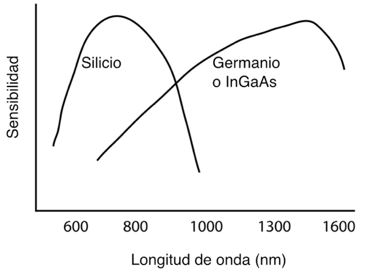
Resolución del Instrumento Frente a Incertidumbre de Medición
Teniendo en cuenta la incertidumbre de la mayoría de las mediciones de fibra óptica, los fabricantes de instrumentos han proporcionado medidores de potencia y pérdida con una resolución de medición que suele ser mucho mayor de lo necesario. La incertidumbre de las mediciones de potencia óptica es de unos 0.2 dB (5%), las mediciones de pérdidas suelen tener incertidumbres de 0.2-0.5 dB o más, y las mediciones de pérdidas de retorno óptico tienen una incertidumbre de 1 dB.
Los instrumentos que disponen de lecturas con una resolución de 0.01 dB sólo suelen ser apropiados para mediciones de laboratorio de pérdidas de componentes muy bajas o cambios provocados por cambios ambientales. Dentro del laboratorio, una resolución de 0.01 dB puede ser extremadamente útil, ya que a menudo se miden pérdidas de conectores o empalmes inferiores a 0.10 dB o cambios en las pérdidas bajo tensión ambiental inferiores a 0.1 dB. La estabilidad de las fuentes y el estrés físico sobre los cables limita la incertidumbre de medida a unos 0.02 a 0.05 dB por día, pero una resolución de 0.01 dB puede ser útil para determinar pequeños cambios en el rendimiento de los componentes.
Las mediciones sobre el terreno tienen una incertidumbre mayor porque se miden más componentes a la vez y las pérdidas son mayores. En la práctica, las mediciones son mejores cuando la resolución del instrumento se limita a 0.1 dB. Las lecturas serán más estables al ser leídas y más indicativas de la incertidumbre de la medición.
Medidores de Potencia de Fibra Óptica
La medición de la potencia requiere un medidor de potencia con un adaptador que coincida con el conector de fibra óptica en el cable que se está probando, y si usted está probando un transmisor, un cable de fibra óptica en buen estado (del tamaño de fibra adecuado, ya que la potencia acoplada es función del tamaño del núcleo de la fibra) y un poco de ayuda de la electrónica de red para encender el transmisor. Recuerde que cuando mida la potencia, el medidor debe estar ajustado a la longitud de onda y el rango adecuados (normalmente dBm, a veces microwatios, pero nunca "dB", que es un rango de potencia relativa que sólo se utiliza para comprobar las pérdidas). Consulte las instrucciones que vienen con el equipo de prueba para la configuración y las instrucciones de medición.
Para medir la potencia, conecte el medidor al cable conectado a la fuente que tiene la salida que desea medir. Puede ser en el receptor para medir la potencia del receptor, o utilizando un patchcord o un cable de prueba de referencia (probado y que se sepa que es bueno) que esté conectado al transmisor para medir la potencia de salida. Encienda el transmisor/fuente y espere unos minutos a que se estabilice. Ajuste el medidor de potencia a la longitud de onda correspondiente y anote la potencia que mide el medidor.
Compárala con la potencia especificada para el sistema y asegúrate de que es suficiente pero no excesiva.
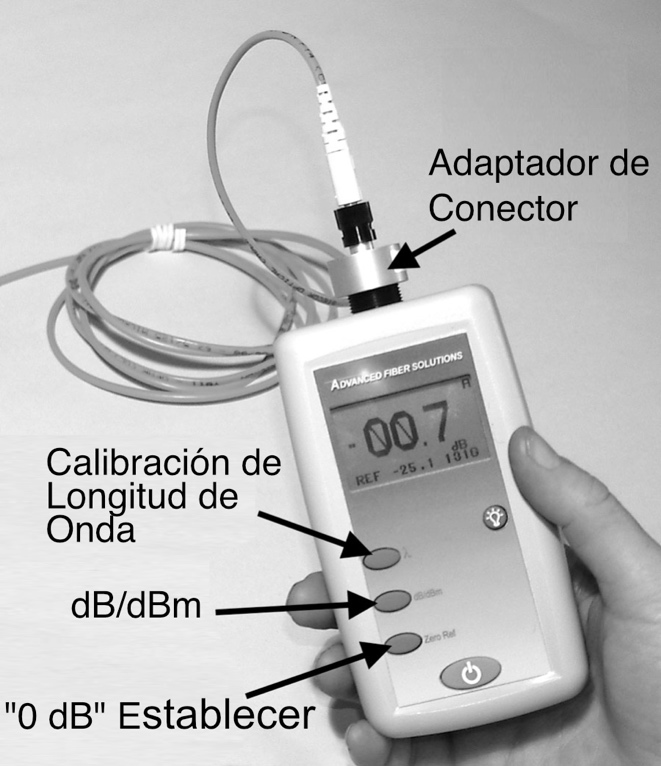
Pérdida Óptica o Pérdida Por Inserción
La pérdida óptica es el principal parámetro de rendimiento de la mayoría de los componentes de fibra óptica. Para la fibra, es la pérdida por unidad de distancia o coeficiente de atenuación. En el caso de los conectores, es la pérdida de conexión cuando se acoplan a otro conector. En el caso de los cables, es la pérdida total de los componentes del cable, incluidos los conectores, la fibra, los empalmes y cualquier otro componente del tramo de cable que se está probando. Utilizaremos los cables para ilustrar la pérdida por inserción y, a continuación, analizaremos otros componentes.
La pérdida de un cable es la diferencia entre la potencia acoplada al cable en el extremo transmisor y la que sale en el extremo receptor. Las pruebas de pérdidas requieren medir la cantidad total de potencia óptica perdida en un cable (incluida la atenuación de la fibra, la pérdida del conector y la pérdida del empalme) con una fuente de luz de fibra óptica y un medidor de potencia (LSPM por sus siglas en inglés [Light Source and Power Meter) o un equipo de prueba de pérdidas ópticas (OLTS). Generalmente, la fibra multimodo se prueba a 850 nm y, opcionalmente, a 1300 nm con fuentes LED. La fibra monomodo se prueba a 1310 nm y opcionalmente a 1550 nm con fuentes láser.
La mayoría de las pruebas de pérdidas se realizan en conjuntos de cables, ya sean patchcords o plantas de cables instaladas. Pero los fabricantes de fibras prueban la pérdida de cada fibra para calcular su coeficiente de atenuación. Los fabricantes de conectores prueban muchos conectores para obtener un valor medio de la pérdida que tendrá el conector cuando esté terminado en fibras. Otros fabricantes de componentes también prueban la pérdida de sus componentes para verificar su rendimiento.
La medición de la pérdida de inserción se realiza acoplando el cable que se está probando a cables de referencia buenos y conocidos con una potencia de lanzamiento calibrada que se convierte en la referencia de pérdida "0 dB". ¿Por qué se necesitan cables de referencia para medir las pérdidas? Las pruebas con cables de referencia en cada extremo simulan una planta de cableado con patchcords que se conectan a equipos de transmisión. Se necesita un cable que mida la potencia de salida de la fuente para calibrar la referencia de pérdida "0 dB".
Además, para medir la pérdida de los conectores del extremo de un cable, hay que acoplarlo a un conector similar que se sepa que funciona bien. Este es un punto importante que a menudo no se comprende del todo. Cuando decimos pérdida de conector, en realidad queremos decir pérdida de "conexión", es decir, la pérdida de un par de conectores acoplados. Por lo tanto, para probar los conectores es necesario acoplarlos a conectores de referencia, que deben ser de alta calidad para no afectar negativamente a la pérdida medida al acoplarlos a un conector desconocido.
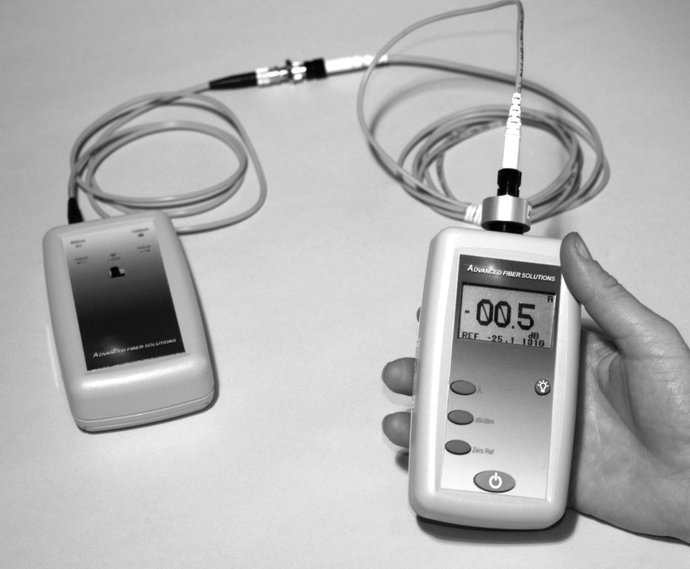
Además de un medidor de potencia, necesita una fuente de prueba (fuente de luz) para medir la pérdida. La fuente de prueba debe ser compatible con el tipo de fibra que se está probando (generalmente un LED para MM o un láser para SM) y la longitud de onda (850, 1300, 1550 nm) que se utilizará en el cable de fibra óptica que está probando. Si va a realizar pruebas según algunas normas, es posible que tenga que añadir algún acondicionamiento de modo, como una envoltura de mandril, para cumplir las condiciones de lanzamiento estándar.
Fuentes de Prueba de Fibra Óptica
Debe elegirse una fuente de prueba de fibra óptica que sea compatible con el tipo de fibra utilizada (monomodo o multimodo con el diámetro de núcleo adecuado) y la longitud de onda deseada para realizar la prueba. La mayoría de las fuentes son LED o láseres de los tipos utilizados habitualmente como transmisores en los sistemas de fibra óptica reales, lo que los hace representativos de las aplicaciones reales y mejora la utilidad de las pruebas. Algunas pruebas de laboratorio, como la medición de la atenuación de la fibra en un rango de longitudes de onda requiere una fuente de longitud de onda variable, que suele ser una lámpara de tungsteno con un monocromador para variar la longitud de onda de la fuente de luz.
Las longitudes de onda típicas de las fuentes son 650 o 665 nm (fibra plástica), 820, 850 y 870 nm (fibra multimodo de longitud de onda corta) y 1300 (fibra multimodo de longitud de onda larga) o 1310 nm y 1550 nm (fibra monomodo de longitud de onda larga). Los LED se utilizan normalmente para probar la fibra multimodo y los láseres para la fibra monomodo, aunque hay algunos cruces. Las LAN de alta velocidad que utilizan fibra multimodo pueden probarse con VCSEL como las fuentes del sistema y los cables de parcheo monomodo cortos pueden probarse con LED.
La longitud de onda de la fuente puede ser un factor crítico a la hora de realizar mediciones de pérdidas precisas en enlaces largos, ya que el coeficiente de atenuación de la fibra es sensible a la longitud de onda. Por lo tanto, todas las fuentes de prueba deben calibrarse para la longitud de onda en caso de que se requieran correcciones para las variaciones de longitud de onda.
Las fuentes de prueba casi siempre tienen conectores fijos. Como cables de referencia deben utilizarse cables de parcheo de prueba híbridos con conectores compatibles con la fuente en un extremo y con el conector que se está probando en el otro. Esto puede afectar al tipo de modo de ajuste de referencia utilizado para las pruebas de pérdidas.
Los factores relacionados con la fuente que afectan a la precisión de la medición son la estabilidad de la potencia de salida y la distribución modal lanzada a la fibra multimodo. La estabilidad de la fuente depende principalmente de los circuitos electrónicos de la fuente.
Las normas del sector tienen requisitos sobre la salida modal de las fuentes de prueba para fibra multimodo que son importantes para los fabricantes de las fuentes de prueba. Diversas normas han exigido codificadores, filtros y eliminadores de modo para ajustar la distribución modal en la fibra de forma que se aproxime a las condiciones de funcionamiento reales. En la actualidad, la mayoría de las normas exigen que las fuentes cumplan los requisitos de salida y que en las pruebas se utilice un filtro de modo de tipo envolvente de mandril. Los efectos de la distribución de potencia modal en las mediciones multimodo se tratan en el capítulo sobre fibra óptica.
Cables de Referencia
Las pruebas de pérdidas requieren de uno a tres cables de referencia, en función de la prueba realizada, el método de prueba y los adaptadores de acoplamiento adecuados para los conectores. Los cables de referencia suelen tener entre 1 y 2 metros de longitud, con fibra y conectores que coinciden con los cables que se van a probar.
La precisión de la medición depende de la calidad de los cables de referencia, ya que se acoplarán al cable sometido a prueba. El estado y la limpieza de los conectores de los cables de lanzamiento y recepción es uno de los factores más importantes para la precisión de las mediciones de pérdidas. Pruebe siempre los cables de referencia mediante el método de patchcord o de un solo extremo que se muestra a continuación para asegurarse de que están en buen estado antes de empezar a probar otros cables. Los grupos de estándares no han logrado especificar con éxito la calidad de los cables de referencia en términos de componentes con tolerancias ajustadas, como la fibra y los conectores. Los estándares que requieren cables de prueba de calidad de referencia ahora especifican cables con conexiones de baja pérdida.
La mejor recomendación para calificar los cables de referencia es elegir cables con bajas pérdidas, probados "single-ended" según la norma de prueba de cables FOTP-171, como se describe a continuación. Las bajas pérdidas son difíciles de definir, pero las superiores a 0.5 dB son cuestionables. Los cables de buena calidad, monomodo o multimodo, deberían presentar pérdidas en un solo extremo inferiores a 0.3 dB.
Cuando se prueban cables multimodo, existe una controversia sobre si los cables fabricados con fibra insensible a dobleces deben utilizarse como cables de referencia. Algunas normas dicen específicamente que no se deben utilizar cables BI ("bend insensitive") porque tienden a tener un mayor relleno de modo debido al diseño BI de la fibra y son más difíciles de modificar el relleno de modo para condiciones de lanzamiento controladas. El problema es que la mayor parte de la fibra multimodo es ahora fibra BI y no toda está marcada como tal, por lo que realmente no hay forma de seguir esta recomendación.
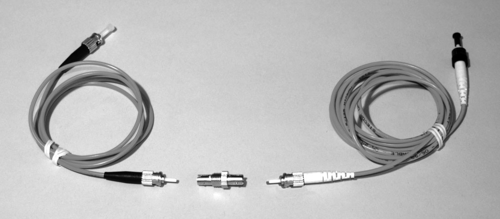
Para las pruebas sólo deben utilizarse adaptadores de acoplamiento de la máxima calidad, ya que también son un factor de pérdida. Los adaptadores baratos suelen tener manguitos de plástico para alinear las férulas de los conectores, que se desgastan rápidamente y provocan grandes pérdidas incluso con conectores buenos. Utilice únicamente adaptadores con férulas metálicas o, preferiblemente, cerámicas, especificados tanto para conectores multimodo como monomodo.
Pruebas de Pérdida
Hay dos métodos que se utilizan para medir la pérdida de inserción con una fuente de luz y un medidor de potencia, una "prueba de patchcord" también llamada "pérdida de un solo extremo", según la norma FOTP-171 de la TIA, y una "prueba de planta de cable instalada" o "pérdida de doble extremo" según la norma TIA OFSTP-14 (multimodo) y OFSTP-7 (monomodo). La diferencia entre las dos pruebas es que la prueba de pérdida de extremo único utiliza sólo un cable de lanzamiento y prueba únicamente el conector conectado al cable de lanzamiento, además de la fibra y cualquier otro componente del cable. La prueba monomodo se utiliza principalmente para probar patchcords o cables cortos, ya que puede probar cada conector individualmente.
La prueba de pérdida de doble extremo utiliza un cable de lanzamiento y un cable de recepción conectados a el medidor y mide la pérdida de los conectores en ambos extremos del cable sometido a prueba.
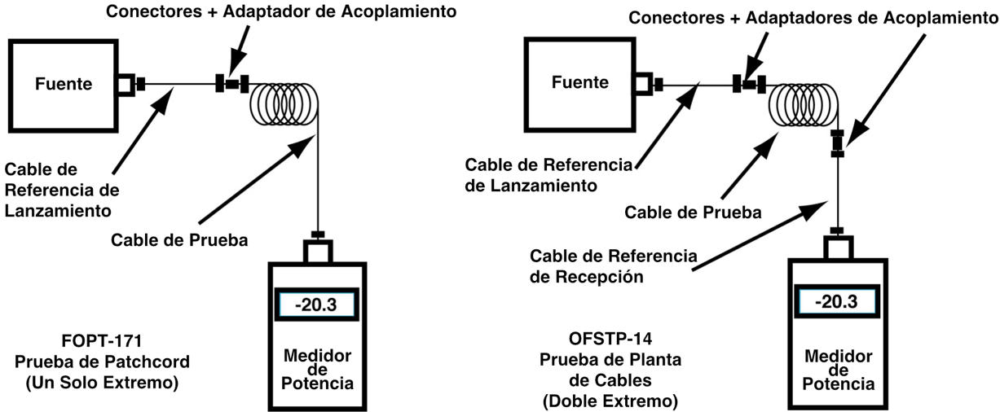
La prueba de un solo extremo se suele utilizar en los cables de interconexión ("patch cords") para poder probar los conectores de cada extremo de un cable corto de forma individual y asegurarse de que ambos son buenos, así como para saber qué conector está defectuoso en caso de que haya algún problema.
Las pruebas de doble extremo se utilizan con una planta de cables instalada para asegurar que la instalación haya sido realizada correctamente y para comparar los resultados de las pruebas con los cálculos del presupuesto de pérdidas.
La pérdida de un solo extremo se mide acoplando el cable que desea probar al cable de inicio de referencia y midiendo la potencia en el extremo lejano con el medidor. Al hacer esto, solo se mide la pérdida del conector acoplado al cable de inicio y la pérdida de cualquier fibra, empalmes u otros conectores en el cable que se está probando. Dado que está apuntando el conector en el extremo lejano del cable hacia un detector en el medidor de potencia en lugar de acoplarlo a otro conector, efectivamente no tiene pérdida, por lo que no se incluye en la medición. Este método se describe en FOTP-171 y se muestra en el dibujo. Una de las ventajas de esta prueba es que permite localizar un conector defectuoso en los cables, ya que se puede invertir el cable para comprobar los conectores de cada extremo por separado. Cuando la pérdida es alta, el conector defectuoso se acopla al cable de referencia.
En una prueba de pérdidas de doble extremo, se conecta el cable a probar entre dos cables de referencia, uno conectado a la fuente y otro al medidor. De este modo, se miden las pérdidas de los conectores de cada extremo, más la pérdida de todo el cable o cables, incluidos los conectores y empalmes, que se encuentran entre ellos. Este es el método especificado en OFSTP-14 (multimodo, la prueba monomodo es OFSTP-7), la prueba estándar de pérdidas en una planta de cable instalada.
Ajuste de la Referencia "0 dB" Para la Comprobación de Pérdidas
Para medir las pérdidas, primero es necesario establecer una potencia de lanzamiento de referencia para las pérdidas, que se convierte en el valor de 0 dB. El ajuste correcto de la potencia de referencia de 0 dB es fundamental para realizar buenas mediciones de pérdidas.
Para las pruebas de un solo extremo, la potencia de referencia para 0 dB se establece en el extremo del cable de referencia. Basta con conectar el medidor de potencia al extremo del cable, medir la potencia de salida y, con la mayoría de los medidores, establecerla como referencia.
para medir las pérdidas. A continuación, el medidor leerá la pérdida de cada cable probado directamente.
Existen tres métodos para ajustar la referencia de una prueba de doble extremo, utilizando uno, dos o tres cables de referencia, y el método elegido afectará a la pérdida medida. ¿Por qué hay tres métodos? Los tres métodos se han desarrollado debido a las variaciones en los estilos de conectores y en la fabricación de los equipos de prueba.
Un Cable de Referencia
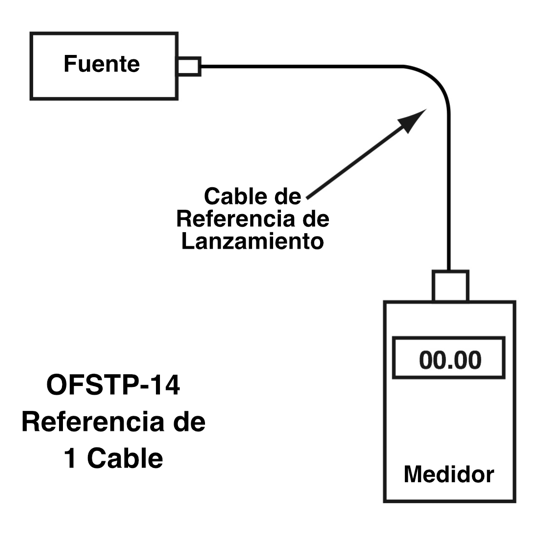
La mayoría de los conectores de fibra óptica están fabricados de forma que la fibra se sujeta en una férula que sobresale, lo que se denomina conector tipo "clavija" ("plug"). Dos conectores de enchufe se acoplan mediante un adaptador de acoplamiento que mantiene las férulas alineadas y les permite encontrarse en el centro. Si se prueban conectores de este tipo y el equipo de prueba tiene interfaces que se ajustan a esos conectores, se puede utilizar la referencia de un solo cable. Este método es el más sencillo y generalmente se considera el método de elección, ya que no se incluyen conexiones al establecer la referencia de 0 dB.
Después de fijar una referencia, el cable de lanzamiento se separa del medidor, pero no de la fuente. El cable de referencia de lanzamiento nunca debe retirarse de la fuente después de establecer la referencia para garantizar que la potencia de lanzamiento permanezca constante. El cable de recepción se conecta al medidor y, a continuación, ambos cables de referencia se conectan al cable que se va a comprobar. La lectura de pérdidas incluirá tanto las conexiones al cable bajo prueba como la pérdida de la fibra y cualquier otro componente del propio cable.
Referencia de Dos Cables
Si el equipo de prueba tiene una interfaz para un estilo diferente de conector, por lo que los conectores de los cables que se van a probar no se pueden acoplar a los instrumentos, se puede utilizar un método de referencia de dos cables. Los cables de referencia deben ser cables híbridos con conectores en un extremo que coincidan con las interfaces de los instrumentos y el otro extremo que se acople a los conectores del cable que se va a probar. La referencia de 0 dB se establece conectando ambos cables de referencia a los instrumentos y conectando los otros extremos con un adaptador de acoplamiento. Una vez ajustada la referencia, se desconectan los dos cables por la mitad y se introduce entre ellos el cable que se va a comprobar.
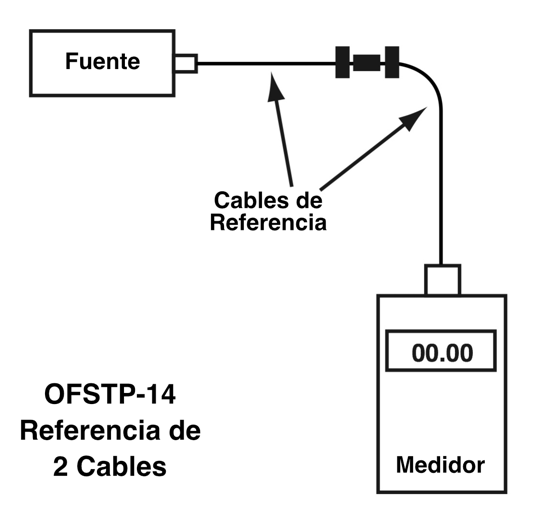
La lectura de pérdidas incluirá las dos conexiones al cable sometido a prueba y la pérdida de la fibra y de cualquier otro componente del propio cable menos la pérdida de la conexión entre los dos cables de referencia al establecer la referencia. Por lo tanto, la pérdida medida utilizando la referencia de dos cables será inferior a la de la referencia de un cable por la conexión incluida al establecer la referencia. La incertidumbre de esta pérdida de conexión incluida en la referencia también se añade a la incertidumbre de la medición de pérdida de cualquier cable probado de esta manera.
Referencia de Tres Cables
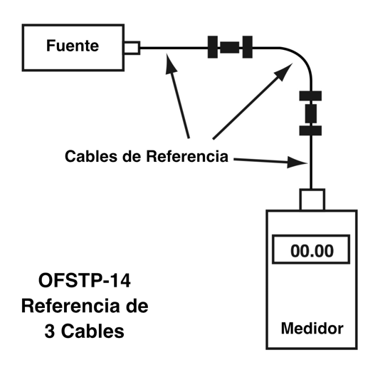
Algunos conectores de fibra óptica son de tipo "enchufe" y "clavija", es decir, uno tiene una férula saliente y el otro una clavija o receptáculo. Algunos tienen clavijas (pines) de alineación que sólo están en un lado, como el conector MTP, en el que las clavijas se utilizan en el lado del puerto receptor. Suelen utilizarse con clavijas en ambos extremos de los patchcords y con clavijas o receptáculos en los cables de instalación permanente terminados en racks o tomas.
Cualquiera de estos dos tipos de conectores sólo puede acoplarse a un tipo de conector adecuado, lo que dificulta la referencia de uno o dos cables. La solución es una referencia de tres cables, en la que los cables híbridos conectados a los instrumentos para los cables de referencia están terminados en clavijas y un tercer cable terminado en jacks se inserta entre ellos para crear una referencia de 3 cables. Después de ajustar la referencia "0 dB", el tercer cable de referencia del medio se sustituye por el cable que se va a probar.
Como antes, la lectura de pérdidas incluirá tanto las conexiones al cable bajo prueba como la pérdida de la fibra y cualquier otro componente del propio cable menos la pérdida de las dos conexiones entre el tercer cable de referencia y los dos cables de referencia al establecer la referencia. Dado que el tercer cable suele ser sólo una longitud corta de fibra con conexiones en cada extremo, la pérdida de la fibra es ignorable. La pérdida medida utilizando la referencia de tres cables será inferior a la de la referencia de un cable por las dos conexiones incluidas al establecer la referencia. La incertidumbre de estas dos pérdidas de conexión incluidas en la referencia también se añade a la incertidumbre de la medición de pérdida de cualquier cable probado de esta manera.
Aunque este método de los tres cables tiene la incertidumbre más alta, es el único que funciona para cualquier conector y cualquier equipo de pruebas. Por ello, se ha convertido en el método preferido en varias normas internacionales.
Elección de Un Método de Referencia
Algunos libros de referencia y manuales muestran el ajuste de la potencia de referencia para la pérdida utilizando sólo un cable de referencia de lanzamiento, tanto un cable de lanzamiento como de recepción acoplados con un adaptador de acoplamiento o incluso tres cables de referencia. De hecho, las normas del sector incluyen los tres métodos para establecer una referencia de "pérdida de 0 dB". Los métodos de referencia de dos o tres cables son aceptables para algunas pruebas y son la única forma de probar algunos conectores, pero reducirán la pérdida que mida en la cantidad de pérdida entre sus cables de referencia cuando establezca su referencia de "pérdida de 0 dB". Además, si alguno de los cables de referencia está mal, el ajuste de la referencia con los cables no revela ese problema. Entonces podría empezar a probar con cables de lanzamiento malos haciendo que todas sus mediciones de pérdida sean erróneas. Esto significa que es muy importante inspeccionar y probar los cables de referencia para asegurarse de que están en buenas condiciones.
Acondicionamiento Modal Para Fibras Multimodo
La mayoría de los estándares para pruebas de fibra multimodo incluyen algún acondicionamiento modal para crear condiciones de prueba estandarizadas que garanticen resultados de medición repetibles. El método habitual consiste en utilizar una fuente cuya salida cumpla un criterio estándar, acoplada a un cable de lanzamiento de referencia, en el que se utiliza una envoltura de mandril para eliminar los modos de orden superior. Los fabricantes de equipos de prueba también ofrecen acondicionadores de modo.
Las normas pueden tener métodos diferentes, incluidos requisitos diferentes para fibras diferentes. Las normas internacionales exigen una métrica de acondicionamiento de modo denominada flujo restringido (EF por sus siglas en inglés [encircled flux]), pero la TIA-568 sólo la exige para las fibras OM3/4/5, lo que permite que las fibras heredadas (OM1, OM2) utilicen un método anterior.
Es posible que los cables de lanzamiento de referencia que utilizan fibra insensible a la curvatura no respondan a los métodos habituales de acondicionamiento de modo y, por lo general, no se recomiendan para cables de lanzamiento, pero dado que la mayoría de la fibra multimodo es ahora fibra BI, puede que este no sea un requisito relevante.
¿Qué Pérdidas Hay Que Obtener al Probar los Cables?
Antes de realizar las pruebas, preferiblemente durante la fase de diseño, se debe calcular un presupuesto de pérdidas para la planta de cables que se va a probar, con el fin de comprender las pérdidas esperadas.
resultados de las mediciones. Además de proporcionar valores de pérdidas de referencia con los que realizar pruebas, confirmará que el equipo de transmisión de la red funcionará correctamente en este cable. Aunque es difícil generalizar, he aquí algunas directrices:
-Para cada conector, calcula una pérdida de 0.3-0.5 dB para conectores adhesivos/pulidos, 0.75 para conectores prepulidos/empalmados (0.75 máx. de TIA-568)
-Por cada empalme, 0.2 dB (0.3 máx. según TIA-568)
-En el caso de la fibra multimodo, la pérdida es de unos 3 dB por km para fuentes de 850 nm y de 1 dB por km para 1300 nm. Esto se traduce aproximadamente en una pérdida de 0.1 dB por 100 pies para 850 nm, 0.1 dB por 300 pies para 1300 nm.
-Para fibra monomodo, la pérdida es de unos 0.5 dB por km para fuentes de 1310 nm, 0.4 dB por km para 1550 nm. Esto se traduce aproximadamente en una pérdida de 0.1 dB por 600 pies para 1310 nm, 0.1 dB por 750 pies para 1310 nm.
Así que para la pérdida de una planta de cable, calcular la pérdida aproximada como:
(0.5 dB X # conectores) + (0.2 dB x # empalmes) + pérdida de fibra en la longitud total del cable
Sugerencias Para Solucionar Problemas
La mayoría de los problemas de pérdidas elevadas en los cables se deben a conectores en mal estado o sucios, empalmes con pérdidas elevadas o pérdidas por tensión causadas durante la instalación. Los conectores pueden inspeccionarse con un microscopio para detectar suciedad, arañazos, grietas u otros daños. Los localizadores visuales de averías pueden comprobar la continuidad, las conexiones correctas y, si la cubierta del cable lo permite, los dobleces o roturas de alta pérdida.
Si tienes una alta pérdida en un cable, inviértelo y prueba en la dirección opuesta utilizando el método de un solo extremo si es posible. Dado que la prueba de un solo extremo solo evalúa el conector en un extremo, puedes aislar un conector defectuoso de esta manera: es aquel en el extremo del cable de inicio acoplado al cable de inicio en la prueba cuando mides una pérdida elevada.
Las pérdidas elevadas en la prueba de doble terminación deben aislarse volviendo a probar la terminación simple e invirtiendo la dirección de la prueba para ver si el conector final está mal. Si la pérdida es la misma, es necesario probar cada segmento por separado para aislar el segmento defectuoso o, si es lo suficientemente largo, utilizar un OTDR.
Pruebas de OTDR
Los OTDR son instrumentos de fibra óptica más complicados que pueden tomar una foto instantánea de una fibra, mostrando la ubicación de empalmes, conectores, fallos, etc. Los OTDR son potentes instrumentos de prueba para las instalaciones de cables de fibra óptica, si se sabe cómo configurar correctamente el instrumento para la prueba e interpretar los resultados. Cuando los utiliza un operador experto, los OTDR pueden localizar averías, medir la longitud del cable y verificar la pérdida de empalmes. Dentro de unos límites, también pueden medir la pérdida de una planta de cable. El único parámetro de fibra óptica que no miden es la potencia óptica en el transmisor o el receptor. Hay mucha información en la traza del OTDR, como se muestra en la traza real a continuación.
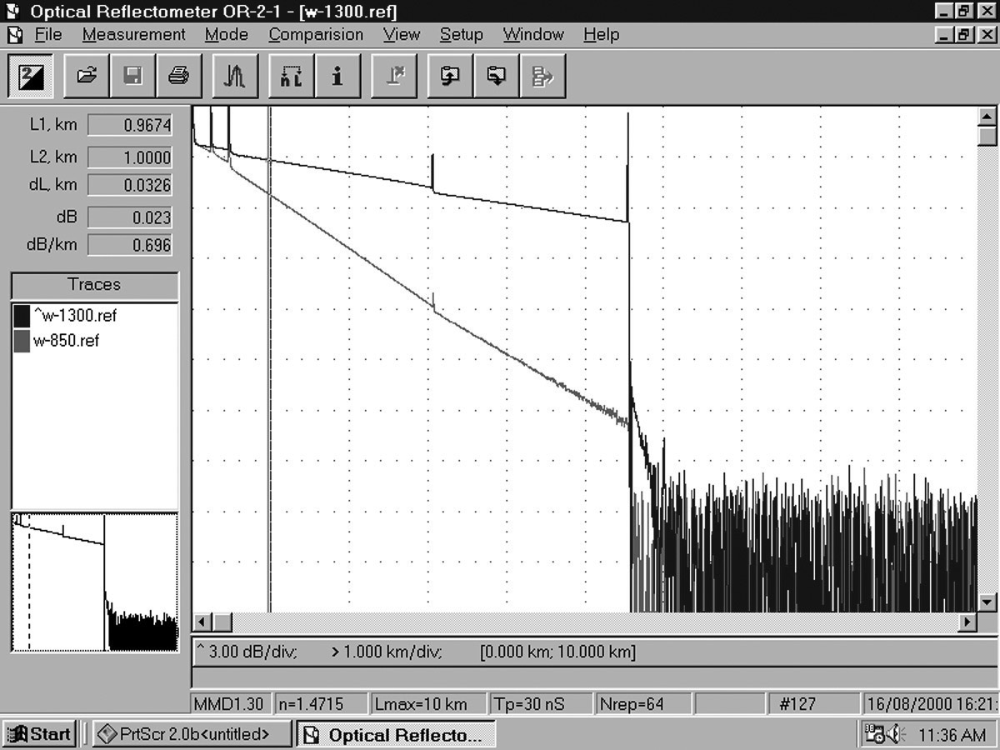
Los OTDR se utilizan casi siempre en cables de planta externa para verificar la pérdida de cada empalme y encontrar puntos de tensión causados por la instalación. También se utilizan ampliamente como herramientas de solución de problemas de OSP, ya que pueden localizar áreas problemáticas, como la pérdida causada por la tensión ejercida sobre un cable durante la instalación. La mayoría de los OTDR carecen de la resolución de distancia necesaria para su uso en los cables más cortos típicos de las redes para predios.
Los OTDR están disponibles en versiones para sistemas de fibra óptica estandarizados, monomodo o multimodo, en las longitudes de onda correspondientes. Para utilizar un OTDR correctamente, es necesario comprender cómo funciona, cómo configurar adecuadamente el instrumento y cómo analizar las trazas. Los OTDR ofrecen una opción de "auto-comprobación", pero utilizar esa opción sin entender el OTDR y comprobar manualmente su trabajo suele acarrear problemas.
Cómo Funcionan los OTDR
A diferencia de las fuentes y los medidores de potencia, que miden directamente la pérdida de la planta de cables de fibra óptica, el OTDR funciona de forma indirecta. La fuente y el medidor duplican el transmisor y el receptor de un enlace de transmisión de fibra óptica, por lo que la medición se correlaciona bien con la pérdida real del sistema.
Sin embargo, el OTDR utiliza la luz retrodispersada de la fibra para determinar la pérdida. El OTDR funciona como un RADAR, enviando un pulso de luz láser de alta potencia a través de la fibra y buscando señales de retorno de la luz retrodispersada en la propia fibra o de la luz reflejada de las uniones de conectores o empalmes. La cantidad de luz retrodispersada es muy pequeña, por lo que el OTDR envía muchos pulsos y promedia las trazas.
En cualquier momento, la luz que ve el OTDR es la luz dispersada del pulso que atraviesa una región de la fibra. Sólo una pequeña cantidad de luz se dispersa de vuelta hacia el OTDR, pero con pulsos de prueba más anchos, receptores sensibles y promediado de señales, es posible realizar mediciones en distancias relativamente largas. Dado que es posible calibrar la velocidad del pulso a medida que pasa por la fibra, el OTDR puede medir el tiempo, calcular la posición del pulso en la fibra y correlacionar lo que ve en la luz retrodispersada con una ubicación real en la fibra. De este modo, puede crear una foto instantánea de la fibra, dando una visualización en cualquier punto de la fibra.
Dado que el pulso se atenúa en la fibra a medida que pasa por ella y sufre pérdidas en conectores y empalmes, la cantidad de potencia del pulso de prueba disminuye a medida que pasa por la fibra en la planta de cables sometida a prueba. Por lo tanto, la parte de la luz que se retrodispersa se reducirá en consecuencia, produciendo una imagen de la pérdida real que se produce en la fibra. Son necesarios algunos cálculos para convertir esta información en una visualización, ya que el proceso se produce dos veces, una saliendo del OTDR y otra en el camino de retorno desde la dispersión en el pulso de prueba.
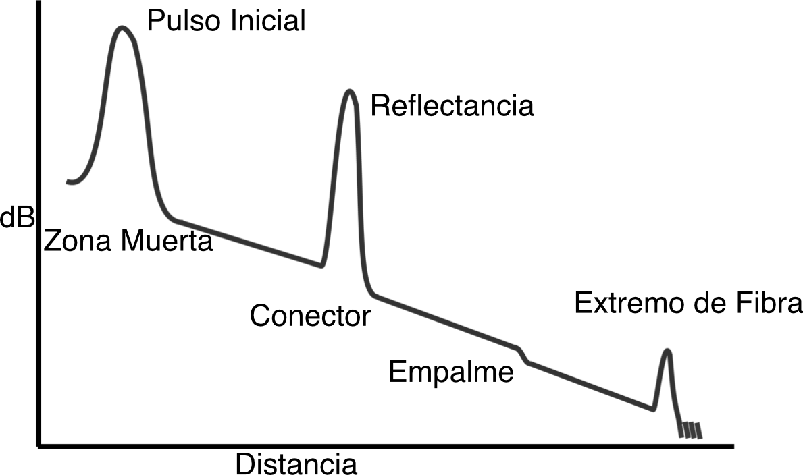
Hay mucha información en la pantalla de un OTDR. La pendiente de la traza de la fibra muestra el coeficiente de atenuación de la fibra (pérdida por distancia) y el OTDR la calibra en dB/km. La caída de la traza de la fibra a través de un conector o empalme permite medir la pérdida en dB. También se puede medir el pico causado por la reflectancia de un conector o empalme mecánico. Aunque algunos usuarios miden la pérdida de extremo a extremo de una planta de cables de fibra óptica con un OTDR, se requiere un cable receptor en el extremo más alejado del cable que se está probando para probar los conectores en ambos extremos y no mide de la misma manera que una fuente de luz y un medidor de potencia (o el transmisor y receptor del sistema), por lo que puede no correlacionarse con la pérdida del sistema.
Observe el gran pulso inicial en la traza OTDR de arriba. Esto se debe a que el pulso de prueba de alta potencia se refleja en el conector del OTDR y sobrecarga el receptor del OTDR. La recuperación del receptor provoca la "zona muerta" cerca del OTDR. Para evitar los problemas causados por la zona muerta, es necesario utilizar siempre un cable de lanzamiento con el largo suficiente cuando se prueben cables.
Los conectores y los empalmes se denominan "eventos" en la jerga de los OTDR. Ambos deben mostrar una pérdida, pero los conectores y los empalmes mecánicos también mostrarán un pico de reflexión para poder distinguirlos de los empalmes de fusión. Además, la altura de ese pico indicará la cantidad de reflexión en el evento, a menos que sea tan grande que sature el receptor del OTDR. En ese caso, el pico tendrá una parte superior plana y una cola en el extremo más alejado, lo que indica que el receptor estaba sobrecargado. La anchura del pico muestra la resolución de distancia del OTDR, o lo cerca que puede detectar los eventos. Los OTDR también pueden detectar problemas en el cable causados durante la instalación. Si una fibra está rota, aparecerá como el extremo de la fibra mucho más corto que el cable o un empalme de alta pérdida en el lugar equivocado. Si el cable está sometido a una tensión excesiva debido a un retorcimiento o a un radio de curvatura demasiado cerrado, se verá como un empalme en el lugar equivocado. Nada ayuda más a la resolución de problemas con un OTDR que disponer de una buena documentación para saber lo que el OTDR debería mostrar en las distintas ubicaciones de la fibra.
Realización de Mediciones con el OTDR
Todos los OTDR muestran la traza en una pantalla y proporcionan dos o más marcadores para colocar en puntos de la pantalla y medir la pérdida y la distancia. Esto puede ser utilizado para medir la pérdida de la fibra según su distancia, donde el OTDR calculará el coeficiente de atenuación de la fibra, o la pérdida de un conector o empalme.
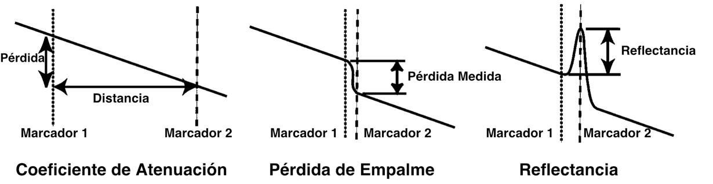
Coeficiente de Atenuación de la Fibra
Para medir la longitud y la atenuación de la fibra, colocamos los marcadores en cada extremo de la sección de fibra que deseemos medir. El OTDR calculará la diferencia de distancia entre los dos marcadores y dará la distancia. También leerá la diferencia entre los niveles de potencia de los dos puntos en los que los marcadores cruzan la traza y calculará la pérdida, o diferencia en los dos niveles de potencia en dB. Por último, calculará el coeficiente de atenuación de la fibra dividiendo la pérdida por la distancia y presentará el resultado en dB/km, las unidades normales para la atenuación. Si el segmento de fibra tiene ruido o no parece recto, el OTDR puede promediar la medición con un método denominado análisis de mínimos cuadrados (LSA).
Pérdida de Empalme o Conector
El OTDR mide la distancia al evento y la pérdida en un evento -un conector o empalme- entre los dos marcadores. Para medir la pérdida en el empalme, mueva los dos marcadores cerca del empalme a medir, teniendo cada uno aproximadamente a la misma distancia del centro del empalme. El OTDR calculará la pérdida en dB entre los dos marcadores, dándole una lectura de pérdida en dB.
Las mediciones de pérdida en conectores o empalmes con cierta reflectancia tendrán un aspecto muy similar, excepto que verá un pico en el conector, causado por la reflexión posterior del conector. El OTDR también puede utilizar un método de mínimos cuadrados para reducir los efectos del ruido y eliminar el error causado por la pérdida de la fibra entre los dos marcadores.
Reflectancia
Para medir la reflectancia, el OTDR mide la cantidad de luz devuelta tanto por la retrodispersión en la fibra como por el reflejo de un conector o empalme. El cálculo de la reflectancia es un proceso complicado en el que interviene el ruido de la línea base del OTDR, el nivel de retrodispersión y la potencia del pico reflejado. Como todas las mediciones de retrodispersión, tiene una incertidumbre de medición bastante alta, pero un OTDR tiene la ventaja de mostrar dónde se encuentran los eventos reflectantes para poder corregirlos si es necesario.
Comparación de Trazos
Comparar dos trazas en la misma ventana del OTDR es útil para confirmar la recopilación de datos y contrastar diferentes métodos de prueba en la misma fibra.
Las comparaciones también se utilizan para comparar trazas de fibra durante la resolución de problemas o la restauración con trazas tomadas justo después de la instalación para ver qué ha cambiado. Todos los OTDR ofrecen esta función, que permite copiar una traza y pegarla en otra para compararlas.
Incertidumbre de Medición OTDR
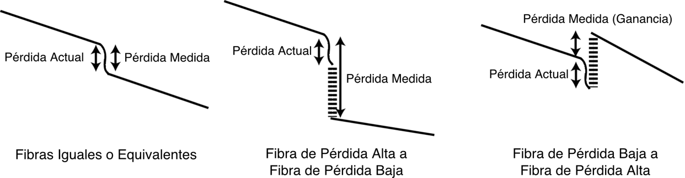
La mayor fuente de incertidumbre de medición que se produce al realizar pruebas con un OTDR es una función del coeficiente de retrodispersión de las fibras que se están probando, la cantidad de luz del pulso de prueba saliente que se dispersa de vuelta hacia el OTDR. La luz retrodispersada utilizada para la medición no es una constante, sino una función de la atenuación de la fibra y del diámetro del núcleo de la fibra.
Si observa dos fibras diferentes empalmadas o conectadas en un OTDR, la diferencia en la retrodispersión de cada fibra es una fuente importante de error. Si ambas fibras son idénticas, como en el caso de empalmar una fibra rota, la retrodispersión será la misma a ambos lados de la unión, por lo que el OTDR medirá la pérdida real del empalme. Sin embargo, si las fibras son diferentes, los coeficientes de retrodispersión desiguales harán que se envíe un porcentaje diferente de luz de vuelta al OTDR.
Si la primera fibra tiene más dispersión (mostrada como atenuación) que después de la conexión, el porcentaje de luz del pulso de prueba del OTDR disminuirá, por lo que la pérdida medida en el OTDR incluirá la pérdida real más un error de pérdida causado por el menor nivel de retrodispersión, haciendo que la pérdida mostrada sea mayor de lo que realmente es. Si miramos en sentido contrario, de una fibra de baja atenuación a una fibra de alta atenuación, vemos que la retrodispersión aumenta, lo que hace que la pérdida medida sea menor de lo que realmente es. De hecho, si el cambio en la retrodispersión es mayor que la pérdida de empalme, esto muestra una ganancia, una gran confusión para los nuevos usuarios de OTDR.
Aunque esta fuente de error siempre está presente, puede eliminarse prácticamente tomando lecturas en ambos sentidos y promediando las mediciones, y muchos OTDR lo tienen programado en sus rutinas de medición. Es la única forma de comprobar las pérdidas de los empalmes en línea y obtener resultados precisos.
OTDR "Fantasmas"
Si está probando cables cortos con conectores muy reflectantes, es probable que encuentre fantasmas. Éstos están causados por la luz reflejada del conector del extremo lejano que se refleja de un lado a otro de la fibra hasta que se atenúa hasta el nivel de ruido. Los fantasmas son muy confusos, ya que parecen ser eventos reflectantes reales como los conectores, pero no mostrarán ninguna pérdida. La mejor forma de determinar si un reflejo es real o un fantasma es compararlo con la documentación de la planta de cableado. Puede eliminar los fantasmas reduciendo las reflexiones, por ejemplo utilizando líquido de adaptación de índices en el extremo del cable de lanzamiento.
Limitaciones del OTDR
La resolución de distancia limitada del OTDR hace que sea muy difícil de utilizar en un predio o edificio, donde los cables suelen estar a unos pocos cientos de metros de distancia. La mayoría de los OTDRs tienen muchas dificultades para resolver las características de los cables cortos típicos de una planta de cableado en predios y es probable que muestren "fantasmas" de reflexiones en los conectores, confundiendo al usuario del OTDR.
En cables muy largos, el OTDR mostrará un mayor ruido a mayor distancia del instrumento. El uso de pulsos de prueba más anchos y más promediado de señal aumentará la capacidad de distancia del OTDR.
Uso Correcto del OTDR
Al utilizar un OTDR, hay algunas precauciones que harán que las pruebas sean más fáciles y comprensibles. Utilice siempre un cable de lanzamiento largo, que permita al OTDR asentarse tras el pulso inicial y proporcione un cable de referencia para probar el primer conector del cable. Si se desea probar el conector final del cable, se necesita un cable receptor en el extremo más alejado de la planta de cables. El operador del OTDR debe configurar cuidadosamente el instrumento para cada cable.
Una vez más, una buena documentación le ayudará a configurar los parámetros de prueba. Empiece siempre con el OTDR configurado con el ancho de pulso más corto para obtener la mejor resolución y un alcance al menos 2 veces la distancia del cable que está probando. Haga un trazado inicial y vea cómo tiene que cambiar los parámetros de prueba para obtener mejores resultados. Algunos usuarios se ven tentados a utilizar la función de autoprueba o "auto test" del OTDR. Los novatos que utilizan el auto-test causan más problemas que cualquier otra cuestión relacionada con el uso de los OTDR.
No utilice nunca la prueba automática hasta que un técnico experto haya configurado correctamente el OTDR y verificado que la prueba automática ofrece resultados aceptables.
Pruebas de Redes de Fibra Óptica de Larga Distancia y Alta Velocidad
Una de las grandes ventajas de la fibra óptica es su capacidad para las comunicaciones de alta velocidad a larga distancia. La atenuación en longitudes de onda largas es menor. La fibra monomodo tiene un ancho de banda extremadamente alto. Las fibras pueden empalmarse sin apenas pérdidas. Los láseres de alta potencia y los regeneradores amplificadores de fibra permiten obtener fácilmente largas distancias.
Sin embargo, a distancias muy largas, nuevos factores en el rendimiento de la fibra adquieren importancia. La dispersión cromática, causada por la luz de diferentes longitudes de onda, y la dispersión del modo de polarización, causada por la polarización de las fibras, se convierten en factores que limitan los enlaces de fibra. Incluso la variación de la atenuación de la fibra con la longitud de onda puede convertirse en un problema cuando se implementan redes que utilizan multiplexación por división de longitud de onda. Es posible que haya que probar estos tres factores en redes de larga distancia para garantizar un rendimiento adecuado del enlace. (Véase el Capítulo 5 sobre fibra para obtener descripciones de estas características de la fibra).
Caracterización de Fibras
A medida que aumentan las velocidades de la red por encima de 10 Gb/s, las distancias superan los 20 km, y se utiliza la multiplexación por división de longitud de onda, es importante comprobar el ancho de banda y la atenuación espectral de las fibras monomodo de las instalaciones exteriores. Esto es especialmente importante para las instalaciones de cable de fibra óptica más antiguas en las que se están actualizando las velocidades de la red, ya que las fibras más antiguas se fabricaron con normas diferentes para redes más lentas. Las nuevas instalaciones también suelen someterse a pruebas para estos mismos requisitos, a fin de garantizar que también admitan velocidades superiores a 100 Gb/s y multiplexación por división de longitud de onda densa.
Las pruebas de campo para las instalaciones de cable incluyen la dispersión cromática (CD), la dispersión del modo de polarización (PMD) y la atenuación espectral (SA) Estas pruebas suelen combinarse y denominarse "Caracterización de la fibra". Las pruebas son muy especializadas y requieren una instrumentación complicada.
Dispersión Cromática en la Planta de Cables
Como ocurre con cualquier otro componente, los parámetros de rendimiento de la fibra óptica pueden variar de un lote a otro, por lo que una planta de cable concatenado de gran longitud con muchas fibras diferentes tendrá una dispersión cromática de extremo a extremo que es una integración de la CD de todas las fibras individuales. Por lo tanto, es probable que se compruebe la CD de la fibra en enlaces de larga distancia después de la instalación o antes de actualizar un enlace a una electrónica de mayor velocidad binaria.
Comprobación de la Dispersión Cromática
Existen varios métodos para comprobar la CD en las fibras. Todos implican pruebas en una variedad de longitudes de onda utilizando varias fuentes discretas de diversas longitudes de onda, un láser sintonizable o una fuente de banda ancha con un monocromador en el receptor y midiendo las velocidades relativas de las señales. A continuación, se analizan los datos tomados en longitudes de onda discretas para calcular la dispersión en términos de ps/nm/km.
Los métodos de prueba utilizan el retardo de fase o el tiempo de vuelo y, por lo general, requieren acceso a ambos extremos de la fibra, así como una segunda fibra para la sincronización de los dos instrumentos de prueba en cada extremo. Sin embargo, también se utiliza un método de prueba OTDR, ya que el OTDR mide el tiempo para convertirlo en distancia. Dado que la velocidad de la luz es diferente a distintas longitudes de onda, el OTDR mediría distancias diferentes en la misma fibra a longitudes de onda diferentes. Las trazas se toman en varias longitudes de onda discretas y la CD puede calcularse a partir de la diferencia en los datos de distancia (o tiempo de ida y vuelta del impulso de prueba) obtenidos de las trazas. Esto permite realizar pruebas de CD sobre el terreno desde un extremo de la fibra.
Todos estos métodos cuentan con normas internacionales para los métodos de pruebas, instrumentos y análisis de datos.
| Estándares | Descripción |
|---|---|
| IEC 60793-1-42 | Métodos de medición y procedimientos de ensayo - dispersión cromática |
| ITU-T G.650.1 | Definiciones y métodos de ensayo para las pruebas lineales, atributos deterministas de fibra y cable monomodo |
| TIA FOTP-175-B | Medición de la dispersión cromática de fibras ópticas monomodo |
| GR-761-CORE | Criterios genéricos para las pruebas de dispersión cromática |
Método de desplazamiento de fase
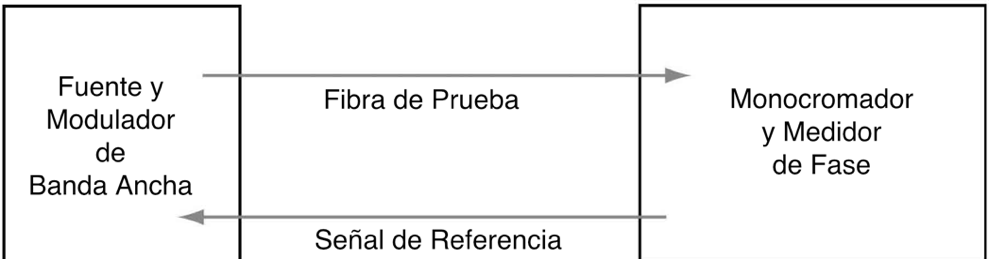
Método de retardo de impulsos
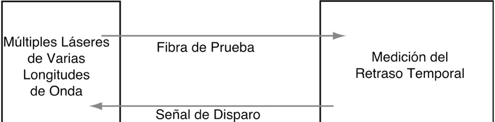
Método de prueba OTDR
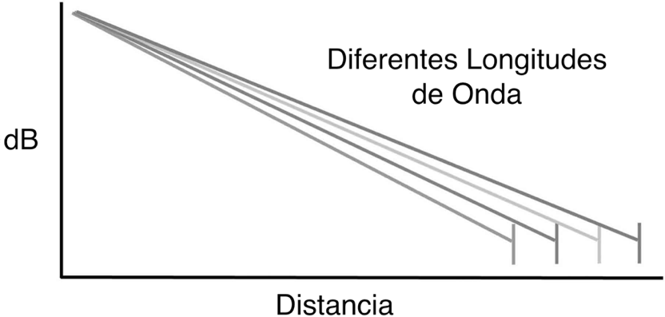
Dispersión del Modo de Polarización
La PMD es un problema complejo en la fibra óptica instalada. En una fibra larga concatenada, cada fibra puede tener diferentes características de guía de ondas y birrefringencia del material causadas por las características aleatorias de cada fibra en el enlace y las variaciones de la tensión en la fibra. Las variaciones son particularmente notables en fibra aérea, donde la PMD puede variar considerablemente en función de la temperatura y la velocidad del viento que azota la fibra.
La PMD provoca un ensanchamiento de los impulsos y/o fluctuaciones en la señal eléctrica recibida, lo que puede causar errores en la recepción de las señales. Dado que la PMD puede variar con el tiempo, a menudo se añade un margen adicional de 1 a 3 dB al presupuesto de potencia para tener en cuenta la variación de la PMD.
La PMD es un problema importante a medida que las velocidades de transmisión de datos en enlaces de larga distancia aumentan a 40 Gb/s y 100 Gb/s. Desgraciadamente, no existen sistemas fiables de compensación de la PMD, por lo que la única solución es probar los enlaces que se van a actualizar para detectar la PMD utilizando uno o varios de los métodos de prueba normalizados.
Pruebas PMD
Por lo general, la PMD se comprueba en las fibras durante su fabricación o durante el cableado. Sobre el terreno, es habitual probar la PMD en fibras recién instaladas destinadas a funcionar a altas velocidades, generalmente superiores a 2.5 Gb/s, o al actualizar fibras instaladas en el pasado. Dado que la PMD varía con el tiempo, una sola prueba se convierte en una media y pueden realizarse pruebas en otro momento para comparar.
Existen varios métodos de prueba de PMD de uso común, algunos de los cuales se limitan al entorno de fabricación, mientras que otros pueden utilizarse sobre el terreno. Esencialmente, todos los instrumentos de prueba tienen una fuente que puede variar la polarización de la señal de prueba y una unidad de medición que puede analizar los cambios de polarización.
Las pruebas de PMD no son fáciles, reproducibles ni precisas. La incertidumbre de la medición puede llegar al 10-20%, como demuestran las pruebas realizadas en los comités internacionales de normalización. Estos comités han llegado a la conclusión de que todas estas técnicas de medición son admisibles, que hay factores en la realización de estas mediciones que no se comprenden bien y que los métodos de análisis de datos no están exentos de dudas. Toda esta incertidumbre de las mediciones de PMD tiene el efecto de dificultar las comparaciones entre pruebas y métodos de prueba. Las variaciones son especialmente elevadas en las pruebas de enlaces de fibra más antiguos. Las presentaciones de campo han demostrado incluso que las variaciones de PMD pueden correlacionarse con la velocidad del viento en los cables aéreos.
Es necesario realizar pruebas de PMD en enlaces largos, pero los datos deben analizarse de forma inteligente para que sean realmente útiles.
A continuación se describen los métodos y las normas pertinentes.
| Descripción | Método de Prueba | Estándares |
|---|---|---|
| PMD para fibras ópticas monomodo por el método del analizador fijo | Recuento de extremos (CE) Transformada de Fourier (FT) | FOTP-113 |
| Medición de la PMD en fibras ópticas monomodo mediante medicione del parámetro de Stokes | Análisis propio de la matriz de Jones (JME) Análisis de la esfera de Poincaré (PSA) | FOTP-122 |
| Medición de la PMD en fibras ópticas monomodo y conjuntos de cables mediante interferometría | Interferometría tradicional (TINTY) Interferometría general (GINTY) | FOTP-124 |
| Directrices para la medición de PMD y DGD en componentes y dispositivos de fibra óptica monomodo | FOTP-196 | |
| Métodos de medición y procedimientos de prueba: dispersión del modo de polarización | Método de medición del analizador fijo (EC / FT) Método de evaluación de Stokes (JME / PSA) Método de interferometría (TINTY) | IEC 60793-1-48 |
| Equipos portátiles de prueba de PMD para analizar fibra monomodo | GR-2947-CORE | |
| Definiciones y métodos de ensayo de los atributos estadísticos y no lineales de fibra y cable monomodo | Técnica de evaluación de los parámetros de Stokes (JME y PSA) Método del estado de polarización (SOP) Métodos interferométricos ( TINTY & GINTY) Técnica de analizador fijo (EC / FT / Análisis Coseno-Fourier) | UIT-T G.650.2 |
Atenuación Espectral
Con el desarrollo de fibras con bajo pico de agua, se ha considerado la posibilidad de transmisión de 1260 a 1675 nm. Esto es el resultado de una cuidadosa fabricación de la fibra para reducir el agua presente en ella (en forma de iones OH-) que provoca una mayor atenuación espectral en torno a 1244 y 1383 nm.
Dado que es posible que se desee utilizar fibras disponibles de atenuación espectral desconocida para CWDM, que utiliza láseres de 1260 a 1670 nm en ventanas de 20 nm, se hace necesario comprobar la atenuación espectral para verificar la posibilidad de uso. En los picos de agua, las fibras heredadas pueden tener coeficientes de atenuación de alrededor de 2 dB/km, mientras que las fibras de picos de agua bajos pueden tener tan sólo 0.4 dB/km.
Las pruebas de atenuación espectral se realizan según las normas TIA/EIA-455-61 o IEC 61300-3-7 con fuentes de banda ancha, como LED, y un analizador de espectro en el extremo receptor de la fibra. La calibración se realiza con una longitud de fibra corta, el instrumento calcula la atenuación espectral en una longitud larga que se está probando. La medición de la atenuación espectral utiliza instrumentos similares a los utilizados para las pruebas de CD por el método de desplazamiento de fase, por lo que algunos instrumentos hacen ambas mediciones a la vez.
Otras Pruebas
Los fabricantes de componentes de fibra óptica realizan pruebas exhaustivas para cualificar los diseños de sus componentes, verificar los procedimientos de fabricación y probar los productos antes de enviarlos a los clientes. Se comprueban las dimensiones de las fibras (tamaño del núcleo y del revestimiento, ovalidad y concentricidad), su rendimiento (coeficiente de atenuación, ancho de banda o dispersión), sus características físicas (resistencia, flexibilidad, etc.) y su capacidad para soportar condiciones ambientales (temperatura, humedad, etc.), y muchos más, incluso durante largos periodos de tiempo). Los cables añaden aún más pruebas medioambientales estrictas.
Los conectores y empalmes se prueban en grandes lotes para determinar las pérdidas medias previstas en instalaciones normales. Las pruebas ambientales son similares a las de los cables, pero pueden añadir pruebas para aplicaciones especiales, como la vibración para su uso en vehículos, barcos o aviones. Los transceptores, WDM, amplificadores de fibra y otros componentes de fibra óptica se someterán a pruebas tanto de rendimiento relacionado con la fibra como de rendimiento eléctrico. La mayoría de estas pruebas se han estandarizado para permitir una comparación justa entre los productos de varios fabricantes.
Hay otras pruebas de campo para plantas de cables que son cada vez más habituales en cables monomodo largos: la dispersión en modo de polarización (PMD) y la dispersión cromática (CD). Estas pruebas adquieren importancia en distancias muy largas con velocidades binarias muy altas. Son muy especializadas y requieren una instrumentación complicada, fuera del alcance de este libro.
Preguntas de Repaso
Verdadero/Falso
Indique si la afirmación es verdadera o falsa.
______ 1. Los cables probados con un OTDR no requieren pruebas de pérdida de inserción con una fuente y un medidor u OLTS.
______ 2. Los conectores de cada extremo de la planta de cables no deben contarse al calcular la pérdida de la planta de cables.
______ 3. El OTDR nunca debe utilizarse sin un "cable de lanzamiento" que también se llama "supresor de pulsos".
Elección múltiple
Identifique la opción que mejor complete el enunciado o responda a la pregunta.
______ 4.La pérdida de planta por cable debe estimarse durante la fase de _____________.
- Diseño
- Instalación
- Pruebas
- Solución de problemas
______ 5. El método estándar de comprobación de cables multimodo instalados se describe en _____________.
- FOTP-34
- ISO 11801
- FOTP-57
- OFSTP-14
______ 6. ¿Qué instrumento(s) de prueba se utiliza(n) para comprobar la pérdida de inserción?
- OLTS o fuente de luz y medidor de potencia
- VFL
- OTDR
______ 7. Los cables de fibra óptica de vidrio multimodo de índice graduado se prueban con fuentes _____ a ______ y _____ longitudes de onda.
- LED, 650, 850 nm
- LED, 850, 1300 nm
- Láser, 980, 1400 nm
- Láser, 1310, 1550 nm
______ 8. ¿Qué tipo de fuente se utiliza para probar fibras monomodo?
- LED
- VCSEL
- Láser
______ 9.¿Cuántos métodos se incluyen en las normas para establecer la referencia "0 dB' para las pruebas de pérdidas?
- Un
- Dos
- Tres
- Cuatro
______ 10.¿Qué método de referencia se requiere para la TIA 568?
- Una vez que la referencia del cable
- Dos cables de referencia
- Tres cables de referencia
- Cualquier método, siempre que esté documentado
______ 11. Los cables de referencia deben coincidir con el ________ de los cables que se están probando.
- Tamaño y tipo de fibra
- Tamaño de la fibra y tipo de conector
- Tipo de conector
- Tamaño de la fibra y especificación de la pérdida
______ 12. La pérdida total de la fibra en la planta de cableado se calcula multiplicando el coeficiente de atenuación de la fibra por el/la ___________.
- Distancia
- Número de enlaces
- Número de conectores
- Número de empalmes
______ 13. El principio de funcionamiento de los OTDR es similar a _______.
- Medidores y fuentes de potencia
- Radar
- Espejos
- Lentes
______ 14. Los OTDR se utilizan en cables de planta exterior para________.
- Verificar la pérdida de empalme
- Medir la distancia
- Encontrar fallos
- Todos los anteriores
______ 15. En las aplicaciones de instlaciones en predios, la utilidad de los OTDR se ve limitada por su _________.
- Potencia de salida
- Capacidad de distancia
- Resolución a distancia
- Software
Estudios y Proyectos Adicionales
Las pruebas son uno de los temas más complejos de la fibra óptica.
Cinco maneras de probar los cables de fibra óptica según las normas internacionales
Diferencias en las mediciones OTDR y de pérdida de inserción
Pruebas y resolución de problemas de los sistemas de fibra óptica
Ejercicios de Laboratorio
Mide la potencia óptica con un medidor de potencia de fibra óptica. Cambia la longitud de onda de calibración por otra longitud de onda para ver la diferencia en la calibración.
Utiliza una fuente de luz y un medidor de potencia para medir la pérdida de un cable de fibra óptica. Realice pruebas utilizando cada uno de los métodos para establecer una referencia de 0 dB y observe cómo cambia la pérdida. Determine los efectos de las envolturas de mandril en el cable de lanzamiento probando una planta de cable con una fuente de luz y un medidor de potencia utilizando un cable de referencia de lanzamiento sencillo y luego utilizando diferentes envolturas de mandril.
Utilice un OTDR para aprender a configurar el instrumento y analizar las trazas. Mida la atenuación de la fibra, la pérdida de un empalme o conector y la reflectancia. Vea cómo cambia la medición al medir la pérdida con los métodos de dos puntos y LSA. Pruebe la misma planta de cables con una fuente de luz y un medidor de potencia y con un OTDR utilizando sólo un cable de lanzamiento y luego ambos cables de lanzamiento y recepción. ¿En qué difieren las pérdidas medidas con los distintos métodos?